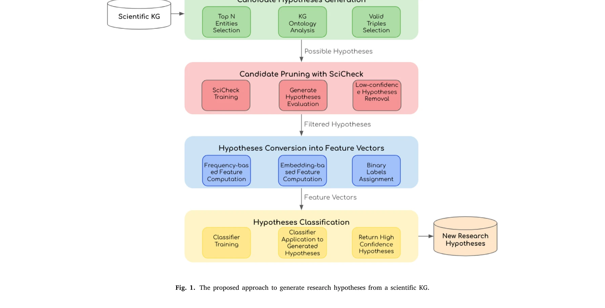
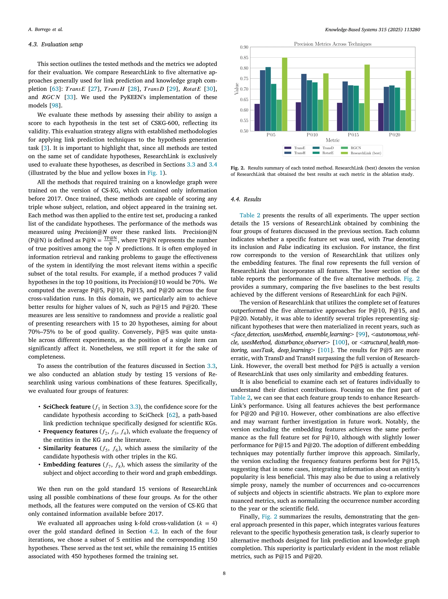

저자: Agustín Borrego, Danilo Dessì, Daniel Ayala, Inma Hernández, Francesco Osborne, Diego Reforgiato Recupero, Davide Buscaldi, David Ruiz, Enrico Motta | 날짜: 04/2025 | DOI: 10.1016/j.knosys.2025.113280

Fig. 1. The proposed approach to generate research hypotheses from a scientific KG.
ResearchLink는 knowledge graph의 경로 기반 특징, KGE, 텍스트 임베딩을 결합하여 과학 분야 전반에 걸쳐 도메인 독립적으로 연구 가설을 생성하는 방법론이다.

Fig. 2. Results summary of each tested method. ResearchLink (best) denotes the version
Fig. 1. The proposed approach to generate research hypotheses from a scientific KG.
총평: ResearchLink는 기존의 단순 KGE 기반 link prediction 방법을 넘어 텍스트 의미론과 서지학적 맥락을 통합함으로써 실질적 연구 가설 생성에 적합한 창의적 방법론을 제시하며, 공개 데이터셋과 오픈소스를 통해 재현성과 확장성을 확보한 우수한 연구이다.